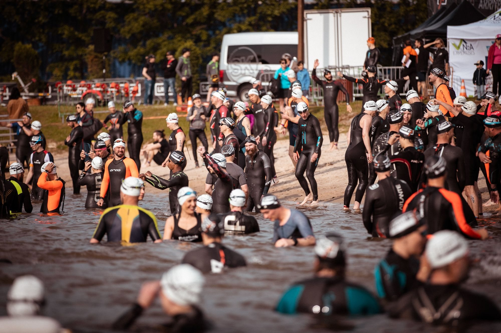
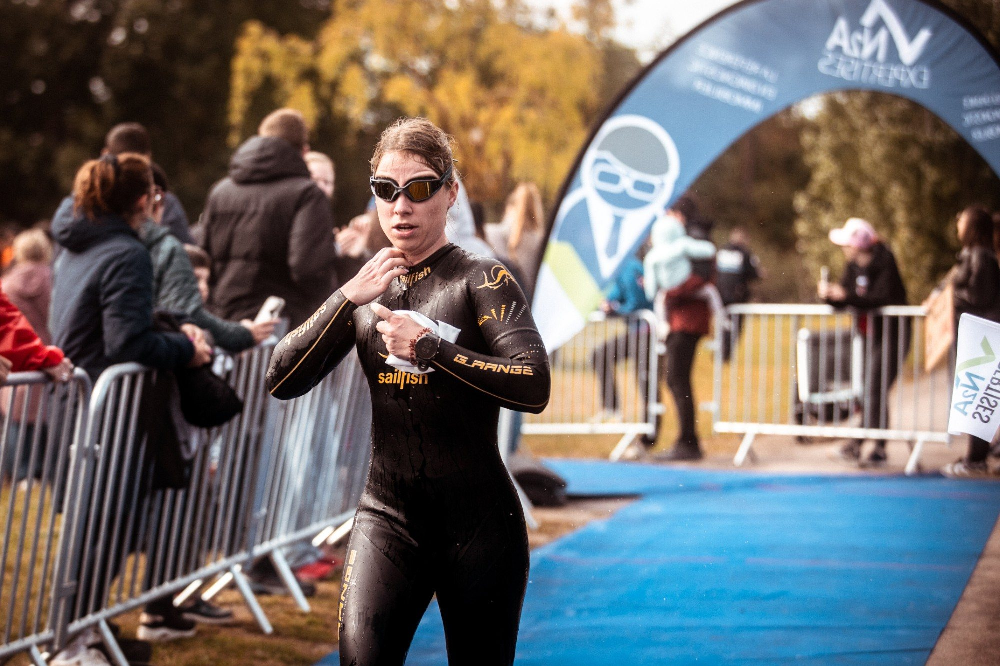
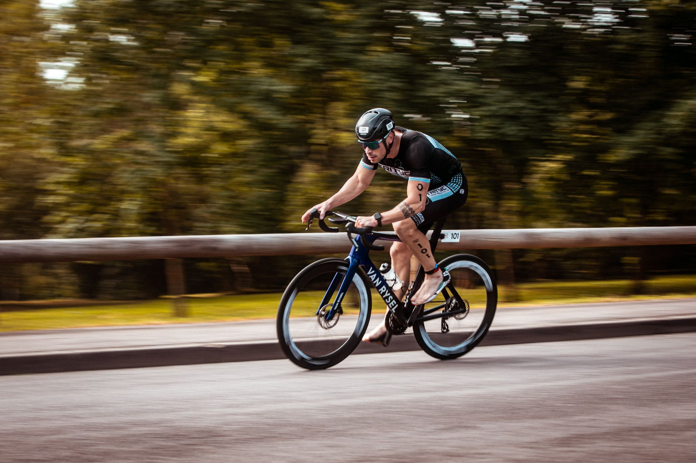
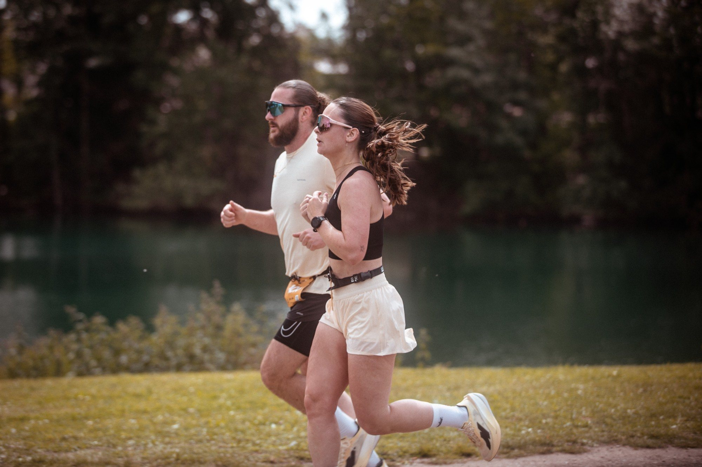

RUN 6 KM
Course à pied6 km
Pas d'eau, pas de vélo : deux boucles plates à Woippy Plage, un ravito à mi-parcours. Pour les supporters qui ont des fourmis dans les jambes.
S'inscrire
Dimanche 16 mai 2027 à Woippy Plage, aux portes de Metz. Un S* pour se lancer, un M** pour envoyer, un RUN 6 KM pour ceux qui gardent les pieds au sec.
Le LIGHT ON TRI Woippy** 2027 a lieu le dimanche 16 mai 2027 à Woippy Plage, aux portes de Metz (Moselle) : triathlon S* à 9h00, RUN 6 KM à 11h30 et triathlon M** à 13h30. Inscriptions en ligne sur Njuko.
Même site, même parc à vélo, deux distances. Le détail de chaque parcours est juste en dessous.
| S* | M** | |
|---|---|---|
| Départ | Dimanche 16 mai · 9h00 | Dimanche 16 mai · 13h30 |
| Natation | 0,5 km | 1,5 km |
| Vélo | 17 km | 40 km |
| Course à pied | 5,6 km | 10 km |
| Tarif | 39 € licencié · 44 € non-licencié | 64 € licencié · 74 € non-licencié |
| Temps limite | Aucun temps limite | Fin du vélo à 3h00 après le départ |
| Âge minimum | Cadet (né en 2011 et avant) | Junior (né en 2009 et avant) |
Glissez pour voir tous les formats
Et aussi : RUN 6 KM.
Format court, proche du sprint
Le format pour découvrir le triathlon ou lancer sa saison. Pas de temps limite : la seule pression, c'est celle des pneus.
Une boucle de 500 m, départ dans l'eau.
Une boucle au départ du parc à vélo de Woippy Plage.
Deux boucles, parcours plat, un ravito à mi-parcours.

L'ambiance globale donne l'impression d'une course familiale. Pour la première fois, c'était top !
Distance olympique
Deux boucles de nage, trois boucles de vélo, trois boucles de course : le M** de Woippy se gère au rythme. Départ à 13h30, de quoi venir encourager le S* avant.
Deux boucles de 750 m avec une sortie à l'australienne de 150 m.
Trois boucles au départ du parc à vélo de Woippy Plage.
Trois boucles de 3,3 km, 100 % route, deux ravitos.
Difficile de dire des choses qui ont déplu avec une si belle organisation.

Natation, vélo, course à pied : les tracés du Triathlon S* de Woippy, à zoomer tranquillement avant le jour J. Ceux du M** seront publiés ici dès qu'ils sont prêts.
Une course à pied sans transition, pour ceux qui vous accompagnent et qui ont envie d'un dossard eux aussi.
Pas d'eau, pas de vélo : deux boucles plates à Woippy Plage, un ravito à mi-parcours. Pour les supporters qui ont des fourmis dans les jambes.
S'inscrire
Les inscriptions se font uniquement en ligne, sur Njuko. Ouverture le mardi 13 octobre 2026 à 20h00, et les places sont limitées sur chaque format.
Une ou plusieurs : à partir de 2 triathlons, le pack s'applique tout seul.
Licence de triathlon, ou certificat médical de moins d'un an à déposer au plus tard 15 jours avant.
La veille ou le jour J selon votre course, avec une pièce d'identité.
Un empêchement ? Transfert de dossard possible jusqu'à 48h avant le premier retrait (3 €). Pack annulation à prendre à l'inscription : 10 € sur le M**.
Dimanche 16 mai 2027 à Woippy Plage. Inscriptions dès le mardi 13 octobre 2026 à 20h00.